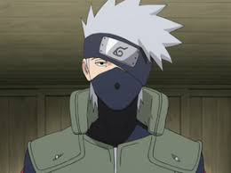
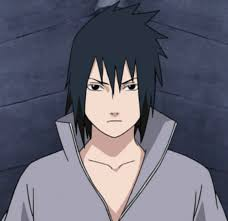
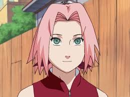

.png)
About Me
Naruto Uzumaki's life story is one of overcoming adversity and achieving his dream of becoming Hokage, the leader of his village, Konohagakure. Born the son of the Fourth Hokage and a Jinchuriki (a human with a tailed beast sealed inside), Naruto endured a lonely childhood marked by the villagers' fear and ostracization due to the Nine-Tailed Fox sealed within him. Despite this, he persevered, determined to gain the recognition and respect he craved. Through hard work, unwavering belief in himself, and forming strong bonds with his teammates and mentors, Naruto transformed from a mischievous academy dropout into a powerful ninja, ultimately saving the world and becoming the Seventh Hokage.
Name
Uzumaki Naruto
nurato@gmail.com
Date of birth
October 10th
From
Hidden Leaf Village
Team 7
Team 7 in the Naruto series is comprised of Naruto Uzumaki, Sasuke Uchiha, Sakura Haruno, and their teacher, Kakashi Hatake. This team is also sometimes referred to as "Team Kakashi".
Kakashi Hatake
Full Name: Kakashi Hatake Nickname: Copy Ninja Kakashi, Kakashi of the Sharingan Birthdate: September 15 Village: Hidden Leaf Village (Konohagakure) Rank: Jonin (later becomes Sixth Hokage) Special Abilities: Sharingan (from Obito Uchiha), Lightning Blade (Chidori), high-level ninjutsu, taijutsu, and genjutsu Personality: Calm, intelligent, loyal, and mysterious Notable Traits: Masked face, silver hair, one Sharingan eye Famous For: Copying over 1,000 jutsus using his Sharingan Hokage Number: Sixth Hokage
Naruto Uzumaki

Full Name: Naruto Uzumaki Birthdate: October 10 Village: Hidden Leaf Village (Konohagakure) Rank: Genin (later becomes Seventh Hokage) Team: Team 7 (with Sasuke & Sakura, led by Kakashi) Chakra Nature: Wind (main), also uses others later Special Abilities: Shadow Clone Jutsu, Rasengan, Sage Mode, Kurama (Nine-Tails) powers Personality: Energetic, determined, loyal, never gives up Dream: To become Hokage and be acknowledged by everyone Hokage Number: Seventh Hokage (Nanadaime) Parents: Minato Namikaze (4th Hokage), Kushina Uzumaki
Sasuke Uchiha
Full Name: Sasuke Uchiha Birthdate: July 23 Village: Hidden Leaf Village (Konohagakure) Rank: Genin (later becomes a rogue ninja, then a powerful shinobi) Team: Team 7 (with Naruto & Sakura, led by Kakashi) Clan: Uchiha Clan Chakra Nature: Fire, Lightning (main), and others Special Abilities: Sharingan, Mangekyō Sharingan, Rinnegan, Chidori, Amaterasu, Susanoo Personality: Cold, serious, intelligent, revenge-driven (early), protective (later) Goal: To avenge his clan, later to protect the ninja world in his own way Brother: Itachi Uchiha
Sakura Haruno
Full Name: Sakura Haruno Birthdate: March 28 Village: Hidden Leaf Village (Konohagakure) Rank: Genin (later Jonin-level medical ninja) Team: Team 7 (with Naruto & Sasuke, led by Kakashi) Chakra Nature: Earth, Water (anime), Medical chakra control Special Abilities: Superhuman strength, exceptional chakra control, medical ninjutsu, Healing Jutsu, Strength of a Hundred Seal Personality: Intelligent, caring, determined, strong-willed Teacher: Tsunade (5th Hokage) Husband: Sasuke Uchiha Child: Sarada Uchiha